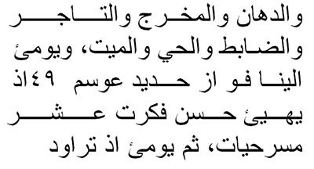
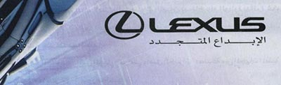

Updated Wed 15 Jun 2016 • tags arabic, urdu, scriptnotes.
This page lists characters in the Unicode Arabic blocks and provides information about them.
To view this page as intended, you need Arabic naskh and nastaliq fonts. The page is served with Scheherazade and Noto Nastaliq web fonts. You can select alternative fonts for the descriptive text from the control to the right.
If you click on any red example text, you will see at the bottom right of the page a list of the characters that make up the example.
To find a character by codepoint, type #char0000 at the end of the URL in the address bar, where 0000 is a four-figure, hex codepoint number, all in uppercase. Or type the hex number here:
Find
You can also find characters for which there are annotations using UniView (switch on Show notes).
The large character in the box will not be rendered unless the webfont downloaded with the page or a system font has a glyph for it. If there is no glyph and you want to see what it looks like, click on See in UniView.
Transcription characters for Arabic follow the Library of Congress, and for Persian follow the UN scheme.
U+0621 ARABIC LETTER HAMZA
Description in the Unicode standard:
Arabic glottal stop ’, hamza
ʔ
For some historical reason this is treated as an orthographic sign rather than as a letter of the alphabet. It sometimes stands alone, but usually appears with a 'carrier' letter - alef, waw, or yeh (أ إ ؤ ئ) for which separate precomposed characters are available in Unicode.
This codepoint is used for representing the standalone hamza only. On its own it has no joining behaviour.
Combined with base characters: When the hamza is above or below another character you should typically use U+0654 ARABIC HAMZA ABOVE ٔ with the appropriate base character, although there are a number of exceptions.
Some exceptions arise because the NFC normalization form converts the base character and combining hamza to a precomposed character. These instances include
Other exceptions arise where the hamza is an integral part of the character itself (ie. an ijam). Examples of these characters include
Cutting and joining hamza in orthography: Classical arabic distinguishes between 'cutting' and 'joining' hamza. 'Cutting' means always pronounced, 'joining' means frequently elided. The joining hamza is of little practical importance in modern arabic pronounced without the old case endings.
In modern printed arabic, the hamza is rarely shown when it occurs at the beginning of a word.
The following are simplified rules for use of (cutting) hamza:
At the beginning of a word hamza is always written on an alef, regardless which vowel it takes. When it takes an i-vowel it is written below the alef. eg. أحمد 'aḥmad, أريد 'urīd, and إكرام 'ikrām. See U+0623 ARABIC LETTER ALEF WITH HAMZA ABOVE أ and U+0625 ARABIC LETTER ALEF WITH HAMZA BELOW إ.
In the middle of a word it is almost always written above a carrier letter. Which one depends on the vowels preceding and following the hamza, and the rules are complicated (and a common source of spelling errors among Arabs). When yeh is used as a mid-word carrier it loses its dots. eg. سأل sa'al, مؤمن mu'min, and نائم nā'im. See U+0623 ARABIC LETTER ALEF WITH HAMZA ABOVE أ, U+0624 ARABIC LETTER WAW WITH HAMZA ABOVE ؤ, and U+0626 ARABIC LETTER YEH WITH HAMZA ABOVE ئ.
At the end of a word it is written above a carrier after a short vowel, or alone on the line after a long vowel or sukuun (vowelless letter). eg. قرأ qara', خطيء ḫaṭi', جزء ǧuz', بناء binā'.
The sign indicating a joining hamza is called a wasla (see U+0671 ARABIC LETTER ALEF WASLA ٱ).
Urdu vowel separator / calendar indicator, hamzā hamzaː
This is the character code for the standalone hamza.
The hamza is also used in conjunction with other characters in Urdu, for which there are precomposed characters that can be used. See U+0624 ARABIC LETTER WAW WITH HAMZA ABOVE ؤ, U+0626 ARABIC LETTER YEH WITH HAMZA ABOVE ئ, U+06D3 ARABIC LETTER YEH BARREE WITH HAMZA ABOVE ۓ, and U+06C2 ARABIC LETTER HEH GOAL WITH HAMZA ABOVE ۂ.
U+066B ARABIC DECIMAL SEPARATOR ٫ looks like a hamza, but isn't.
A standalone hamza is sometimes used at the end of words derived from Arabic, though it is usually omitted in modern Urdu publications, eg. ضیاء ziaː light, ذکاء zakaː intelligence.
Vowel junctions: The hamzā is used to indicate the boundaries between vowel sounds when there is no intervening consonant. Depending on the vowels concerned, it is used in a number of different ways, usually combined with other characters.
In some cases this standalone form is used, eg. انشاءاللہ ɪnʃallaː God willing.
See other ways in which vowel junctions are formed when the hamza is combined with other characters.
Calendar indicator: Gregorian dates are indicated by placing U+0601 ARABIC SIGN SANAH below the year digits with the word عیسوی iːsviː Christian era. This is usually abbreviated as a hamza, eg. ۲۰۰۴ء.
Not used in Persian.
U+0622 ARABIC LETTER ALEF WITH MADDA ABOVE
Description in the Unicode standard:
This is equivalent to U+0627 ARABIC LETTER ALEF ا + U+0653 ARABIC MADDAH ABOVE ـٓ, but since NFC produces this character it is best to use it rather than the decomposed sequence.
Arabic consonant ā, alif madda
Used when either of the two following combinations of glottal stop and a vowel appear in a word:
ʔaʔ (hamza, short a, hamza) eg. آثار ʔaːθaːr
ʔaː (hamza, long a) eg. قرآن qur'ʔaːn
Normal pronunciation in both cases is ʔaː.
The madda sign is still very often shown in print.
Shape: ـآ آ
Urdu consonant, alif madd əlɪf mədd
ɑː (used word initially), eg. آب ɑːb now. Unlike the short vowel diacritics, the diacritic madd is never omitted.
As an exception, it used in non-initial position in the word for Koran, القرآن.
madd means increasing.
See also U+0627 ARABIC LETTER ALEF ا.
Shape: ـآ آ
U+0623 ARABIC LETTER ALEF WITH HAMZA ABOVE
Description in the Unicode standard:
This character is equivalent to U+0627 ARABIC LETTER ALEF ا + U+0654 ARABIC HAMZA ABOVE ٔ, but since NFC produces this character it is best to use it rather than the decomposed sequence.
Arabic consonant, no LOC transcription
ʔa, ʔu, ʔ
This character represents the hamza (ء).
At the beginning of a word hamza is always written on an alef carrier, regardless which vowel it takes. In this case, where the hamza appears above the alef, the vowel could be a or u. Examples: أحمد 'aḥmad, أريد 'urīd.
This character is also used to represent hamza in the middle or at the end of a word. Which of the possible alternative sequences (أ, ؤ or ئ) is used mid-word depends on the vowels preceding and following the hamza. The rules are complicated (and a common source of spelling errors among Arabs).
At the end of a word this character is only used after a short vowel. Examples: سأل sa'al, قرأ qara'.
See U+0621 ARABIC LETTER HAMZA ء for more information about hamza. See also U+0625 ARABIC LETTER ALEF WITH HAMZA BELOW إ, U+0624 ARABIC LETTER WAW WITH HAMZA ABOVE ؤ, and U+0626 ARABIC LETTER YEH WITH HAMZA ABOVE ئ.
Shape: ـأ أ
Not used in Persian or Urdu.
U+0624 ARABIC LETTER WAW WITH HAMZA ABOVE
Description in the Unicode standard:
This character is equivalent to U+0648 ARABIC LETTER WAW و + U+0654 ARABIC HAMZA ABOVE ٔ, but since NFC produces this character it is best to use it rather than the decomposed sequence.
Arabic consonant ’
ʔu, ʔ
This character represents the hamza (ء) in the middle of a word.
In the middle of a word the hamza is almost always written above a carrier letter. Which one depends on the vowels preceding and following the hamza, and the rules are complicated (and a common source of spelling errors among Arabs), eg. مؤمن mu'min (but cf. سأل sa'al, نائم nā'im).
See U+0621 ARABIC LETTER HAMZA ء for more information about hamza. See also U+0623 ARABIC LETTER ALEF WITH HAMZA ABOVE أ, U+0625 ARABIC LETTER ALEF WITH HAMZA BELOW إ, and U+0626 ARABIC LETTER YEH WITH HAMZA ABOVE ئ.
Shape:ـؤ ؤ
Urdu vowel separator+vowel
uː or o immediately after a preceding vowel (see below).
Vowel junctions: The hamzā is used to indicate the boundaries between vowel sounds when there is no intervening consonant. Depending on the vowels concerned, it is used in a number of different ways. It can also have two different shapes, one like the initial form of 'ain and the other more like an italic 's'.
When the second vowel is an uː or o represented by و, the hamzā typically sits directly on top of the و, eg. آؤ ɑːo come; جاؤں ʤɑːũː I may go. Often the hamzā is omitted in this situation.
Many words have the vowel combinations iːo, where hamzā is not typically used, eg. لڑکیوں کا laɽkiːõ kɑː of the girls.
See other ways in which vowel junctions are formed when dealing with other combinations of vowels.
Shape: ـؤ ؤ
U+0625 ARABIC LETTER ALEF WITH HAMZA BELOW
Description in the Unicode standard:
This character is equivalent to U+0627 ARABIC LETTER ALEF ا + U+0655 ARABIC HAMZA BELOW ٕ, but since NFC produces this character it is best to use it rather than the decomposed sequence.
Arabic consonant, no transcription in LOC
ʔi
This character represents the hamza (ء).
At the beginning of a word hamza is always written on an alef carrier, regardless which vowel it takes. When it takes an i vowel it is written below the alef. Example: إكرام 'ikrām.
The mid-word and word-final equivalent of this character is U+0626 ARABIC LETTER YEH WITH HAMZA ABOVE ئ.
See U+0621 ARABIC LETTER HAMZA ء for more information about hamza. See also U+0623 ARABIC LETTER ALEF WITH HAMZA ABOVE أ, U+0624 ARABIC LETTER WAW WITH HAMZA ABOVE ؤ, and U+0626 ARABIC LETTER YEH WITH HAMZA ABOVE ئ.
Shape: ـإ إ
Not used in Persian or Urdu.
U+0626 ARABIC LETTER YEH WITH HAMZA ABOVE
Description in the Unicode standard:
This character is equivalent to U+064A ARABIC LETTER YEH ي + U+0654 ARABIC HAMZA ABOVE ٔ, but since NFC produces this character it is best to use it rather than the decomposed sequence.
Arabic consonant ’
ʔɪ, ʔ
This character represents the hamza (ء) in the middle of a word. When yeh is used as a mid-word carrier it loses its dots.
In the middle of a word the hamza is almost always written above a carrier letter. Which one depends on the vowels preceding and following the hamza, and the rules are complicated (and a common source of spelling errors among Arabs), eg. نائم nā'im (but cf. سأل sa'al, مؤمن mu'min).
See U+0621 ARABIC LETTER HAMZA ء for more information about hamza. See also U+0623 ARABIC LETTER ALEF WITH HAMZA ABOVE أ, U+0625 ARABIC LETTER ALEF WITH HAMZA BELOW إ, and U+0624 ARABIC LETTER WAW WITH HAMZA ABOVE ؤ.
Shape: ئئئ ئ
Urdu vowel separator / vowel
ɪ or a when following a vowel, eg. کوئلہ koɪlɑː coal; لائن lɑːɪn queue; ہیئت hɛat astronomy. The hamza indicates that this vowel is pronounced separately from the preceding one.
iːɛ when used as izafat (see below).
Otherwise functions as a soundless vowel junction indicator ('hamza on its chair').
Vowel junctions: The hamza is used to indicate the boundaries between vowel sounds when there is no intervening consonant. Depending on the vowels concerned, it is used in a number of different ways. It can also have two different shapes, one like the initial form of 'ain and the other more like an italic 's'.
When the second vowel is an iː or e represented by ی or ے, the hamzā 'sits on a chair' before the letter representing the second vowel, eg. کئی kaiː several; تیئیس teiːs twenty-three; کوئی koiː someone; گئے gae they went; گائے gɑːe they sang.
Many words, however, have vowel combinations iːe, where hamzā is not typically used, eg. چلیے ʧaliːe come on.
See other ways in which vowel junctions are formed when dealing with other combinations of vowels.
Izāfat: ɪzɑːfat is the name given to the short vowel ɛ used to describe a relationship between two words. It may be translated of, eg. as in the Lion of Punjab.
This sound is mostly represented using zer, but in certain cases can be represented with a combining hamza. One such case occurs when the preceding word ends in ye ی: eg. ولئکامل valiː ɛ kɑːmɪl perfect saint.
There are other ways in which izafat can be formed.
Shape: ئئئ ئ
U+0627 ARABIC LETTER ALEF
Arabic vowel lengthener, hamza carrier
aː, a, ʔa, -
Formally speaking, this letter has no sound of its own. Its main uses in arabic orthography are:
as a lengthening sign for the a-vowel
as a carrier letter for the hamza (see U+0623 ARABIC LETTER ALEF WITH HAMZA ABOVE أ, and U+0625 ARABIC LETTER ALEF WITH HAMZA BELOW إ)
It also has one or two minor functions such as in conjunction with tawiin (nunation) (see U+064B ARABIC FATHATAN ً ).
Certain parts of the arabic verb end in a long u-vowel that is conventionally written with a following alef that has no effect on pronunciation, eg. كتبوا kætæbuː. The alef is omitted if a suffix is added, eg. كتبوها kætæbuː-haa.
Shape: ـا ا
Persian ʔ, ɔ, æ, -
Urdu vowel, alif alɪf
a/ɪ/u on its own in word initial position.
iː/e/ɛ word initial, combined with a following ye, ای
uː/o/ɔ word initial, combined with a following vāū, او
ɑː with madd آ, but see U+0622 ARABIC LETTER ALEF WITH MADDA ABOVE آ for this.
ʊ/∅ sometimes as part of the Arabic definite article (see below).
ɑː elsewhere, unless part of the Arabic definite article (see below).
The alternative sounds possible in the initial combinations can be disambiguated, when necessary, by the use of combining marks. The combining marks are rarely used in normal text (with the exception of madd shown above). See a table of combining marks for vowels.
Arabic definite article The pronunciation of ال (alif followed by lām) varies when it represents the Arabic definite article. This affects many words in Urdu that have come from Arabic, in particular names and adverbial expressions.
Often the alif is not pronounced after a short preceding word that ends in a vowel. If the preceding vowel was long, it is shortened in this process. Examples: بالکل bɪlkul (absolutely); فی الحال filhɑːl (at present).
Often the vowel is pronounced ʊ, eg. دارالحکومت dɑːrʊlhʊkuːmat (capital).
(The lam may also not be pronounced. See U+0644 ARABIC LETTER LAM ل.)
Shape: ـا ا
U+0628 ARABIC LETTER BEH
Arabic consonant b
b
Shape: ببب ب
Persian consonant
b
Urdu consonant, be
b
bʰe together with U+06BE ARABIC LETTER HEH DOACHASHMEE ھ, to represent the aspirated b in Urdu, a distinct letter of the Urdu alphabet called bhe.
Shape: ببب ب and بھبھبھ بھ
U+0629 ARABIC LETTER TEH MARBUTA
Arabic consonant h/t
Usually no sound, sometimes t.
Used for historical reasons to write the feminine ending, æ – the dots are borrowed from teh (ت). Pronounced as t in specific grammatical contexts. Example: مدرسة mædræsæ.
This letter is only used in final position. If any suffix is added the ending is spelled with U+062A ARABIC LETTER TEH ت, eg. مدرستنا mædræsæt-naː.
In modern arabic it is not uncommon to find the two dots omitted, particularly on masculine proper names that have the feminine ending, eg. طلبة tulbæ.
Shape: ـة ة
Persian h, -, ɛ, æ Arabic fem. t
Not used in Urdu.
U+062A ARABIC LETTER TEH
Arabic consonant t
t
Shape: تتت ت
Persian t
Urdu consonant, te
t
tʰ together with U+06BE ARABIC LETTER HEH DOACHASHMEE ھ, to represent the aspirated t in Urdu, a distinct letter of the alphabet called the.
Shape: تتت ت and تھتھتھ تھ.
U+062B ARABIC LETTER THEH
Arabic consonant th
θ
Shape: ثثث ث
Persian s
Urdu consonant, se se
s Only occurs in words of Arabic and Persian origin, and is much less common than U+0633 ARABIC LETTER SEEN س, which is also pronounced s.
Shape: ثثث ث
U+062C ARABIC LETTER JEEM
Arabic consonant j
ʒ
Shape: ججج ج
Persian ʤ
Urdu consonant, jīm ʤiːm
ʤ
ʤʰ together with U+06BE ARABIC LETTER HEH DOACHASHMEE ھ, to represent the aspirated ʤ in Urdu, a distinct letter of the alphabet called jhe.
Shape: ججج ج and جھجھجھ جھ.
U+062D ARABIC LETTER HAH
U+062E ARABIC LETTER KHAH
U+062F ARABIC LETTER DAL
Arabic consonant d
d
Shape: ـد د
Persian d
Urdu consonant, dāl dɑːl
d
dʰ together with U+06BE ARABIC LETTER HEH DOACHASHMEE ھ, to represent the aspirated d in Urdu, a distinct letter of the alphabet called dhe.
Shape: ـد د and ـدھ دھ.
U+0630 ARABIC LETTER THAL
Arabic consonant dh
ð
Shape: ـذ ذ
Persian z
Urdu consonant, zɑːl.
z
In Urdu, this letter only occurs in words of Arabic and Persian origin, and is much less common than U+0632 ARABIC LETTER ZAIN ز, which is also pronounced z. It is not counted as a regular letter of the Urdu alphabet.
Shape: ـذ ذ
U+0631 ARABIC LETTER REH
U+0632 ARABIC LETTER ZAIN
U+0633 ARABIC LETTER SEEN
Arabic consonant s
s
Shape: سسس س
Persian s
Urdu consonant, sīn siːn
s
Shape: سسس س In Urdu nastiliq text this can have two somewhat different shapes. The main part of the shape may be a wavy line, a little like a 'w', or can sometimes be a single swash – especially when two seen characters are written together. Use the same character for both visual forms. When one or other of the possible shapes is desired, this should be produced by the font.
U+0634 ARABIC LETTER SHEEN
Arabic consonant sh
ʃ
Shape: ششش ش
Persian ʃ
Urdu consonant, šīn ʃiːn
ʃ
Shape: ششش ش In Urdu nastiliq text this can have two somewhat different shapes. The main part of the shape may be a wavy line, a little like a 'w', or can sometimes be a single swash – especially when two sheen characters are written together. Use the same character for both visual forms. When one or other of the possible shapes is desired, this should be produced by the font.
U+0635 ARABIC LETTER SAD
U+0636 ARABIC LETTER DAD
U+0637 ARABIC LETTER TAH
U+0638 ARABIC LETTER ZAH
U+0639 ARABIC LETTER AIN
Description in the Unicode standard:
Arabic consonant ʻ
ʕ
Shape: ععع ع
Persian ʔ, - Preceding V → Vː
Urdu consonant, 'ain ain.
∅ Not pronounced when preserved in Arabic words.
If it occurs at the beginning of a word, it can fulfill a similar role to alif, allowing words to begin with a vowel, but also allowing for alternative spellings for different words with the same pronunciation, eg. عرب arab (Arab) vs. ارب arab (necessity).
Note that a word-initial ɑː sound when the spelling begins with alif is written as alif with madd, eg. آج ɑːʤ (today). The same word-initial sound with 'ain is represented by 'ain followed by alif, eg. عادت ɑːdat (habit).
In non-word-initial positions an ain can cause a change in sound to preceding short vowels. This results in long vowels, but not always the long form typically associated with a given short form.
a short a becomes ɑː, eg. بعد bɑːd (after).
a short ɪ becomes e, eg. سعر ser (verse).
a short ʊ becomes o, eg. شعلہ ʃolɑː (flame).
ʔ occasionally between two vowels, although this is often lost in Urdu, eg. معاف mʊʔɑːf or mɑːf (forgiven); سعآدت səʔɑːdət or sɑːdət (fortunate).
Shape: ععع ع
U+063A ARABIC LETTER GHAIN
U+0640 ARABIC TATWEEL
Description in the Unicode standard:
Arabic
Used to stretch words for simple justification, or to make a word or phrase a particular width, or as a form of emphasis.
Better quality justification systems stretch glyphs, rather than adding baseline extensions. This dynamic stretching of glyphs is often called kashida. In some typesetting systems, such as InDesign, the tatweel character serves more to indicate opportunities for stretching, and the glyph for the character itself is not shown.
Which words are stretched and how much depends on a set of rules that tends to vary for different font styles. (Elongation is not normally used at all for the ruq'a style.) The following is an example of text justified using tatweel from a newspaper column.

One of the major problems when using tatweel to stretch text is that when the width of the space in which the text is displayed, or when new text is added near the start of a paragraph, lines wrap differently and all the places where tatweel would be needed have to be recalibrated. Thus tatweels only work for static text with fixed dimensions.
It is very common to see baseline stretching in modern Arabic text where a word or phrase is stretched to fill a particular space, eg. the Arabic tag line (الابداع المتجدد Creativity renewed) below the word Lexus in the following image is stretched to be the same width.

U+0641 ARABIC LETTER FEH
Arabic consonant f
f
Shape: ففف ف
In arabic material printed in North Africa this letter sometimes has one dot below. There is a separate code point for that (U+06A2 ARABIC LETTER FEH WITH DOT MOVED BELOW ڢ), but it would make more sense to use a font to make this difference than to use a different character.
Persian f
U+0642 ARABIC LETTER QAF
Arabic consonant q
q
Shape: ققق ق
In arabic material printed in North Africa this letter sometimes has only one dot above. There is a separate code point for that (U+06A7 ARABIC LETTER QAF WITH DOT ABOVE ڧ), but it would make more sense to use a font to make this difference than to use a different character.
Persian q, ɢ
U+0643 ARABIC LETTER KAF
U+0644 ARABIC LETTER LAM
Arabic consonant l
l
Shape: للل ل
Persian l
Urdu consonant, lām lɑːm
l
∅ when part of the Arabic definite article (see below).
Shape: للل ل
Combined with a following alif, lām is usually written as لا, eg. گلاس gilɑːs (glass). Sometimes, however, especially in words of Arabic origin such as the equivalent of the English prefix 'un-', the more Arabic form لا is used, eg. لاعلاج lɑːʕilɑːʒ (incurable).
Note that I don't know a way to make this example work with a single font. To produce it I had to mix two different fonts. There may be a special font setting that allows you to control this.
Arabic definite article The pronunciation of ال (alif followed by lām) varies when it represents the Arabic definite article . This affects many words in Urdu that have come from Arabic, in particular names and adverbial expressions.
The lām is not pronounced if it precedes one of the following characters: ت062A te, ث062B se, د062F dāl, ذ0630 zāl, ر0631 re, ز0632 ze, س0633 sīn, ش0634 šīn, ص0635 svād, ض0636 zvād, ط0637 toe, ظ0638 zoe, ل0644 lām, ن0646 nūn. Instead, the following sound is doubled. A tašdīd (U+0651 ARABIC SHADDA ـّ ) may sometimes be used to indicate this. Example: السلام علیکم asːalɑːm alaikum (greetings).
There may also be effects to the sound of the alif too. See U+0627 ARABIC LETTER ALEF ا.
U+0645 ARABIC LETTER MEEM
U+0646 ARABIC LETTER NOON
Arabic consonant n
n
Shape: ننن ن
Persian n
Urdu consonant, nūn nuːn
n, eg. انسان insãːn human being.
◌̃ Within a word it may signal that the preceding vowel is nasalised, rather than representing an n sound, eg. ٹانگ tãːg leg. Sometimes, U+0658 ARABIC MARK NOON GHUNNA ـ٘ is used above this letter in such cases, to clarify that its function is nasalisation. Nasalisation at the end of a word is signalled using U+06BA ARABIC LETTER NOON GHUNNA ں, eg. ماں mãː, mother, کروں karũː, I may do. 1
Shape: ننن
Refs: [1] [unicode8] p383 [2] [L2/12-381]
U+0647 ARABIC LETTER HEH
Arabic consonant h
h
Shape: ههه ه
Persian h, -, ɛ, æ, e
e sometimes in final position, eg. خانه xaːne
Not used in Urdu.
U+0648 ARABIC LETTER WAW
Arabic consonant or lengthener of u-vowel w
w
In certain foreign words, pronounced more like oː, eg. بنطلون bænt̴æloːn
The male proper name عمرو ʕæmr is written with an unpronounced final waw to distinguish it from the name عمر ʕumar that would otherwise be written identically.
Shape: ـو و.
Persian v, u, o, ow, - or lengthener of u-vowel
Not pronounced after خ, eg. خوابيدن xaːbiːdan.
Urdu consonant / vowel, vāū vɑːuː
β as consonant, eg. والد vaːlɪd (father), نومبر navambar (November).
uː or o or ɔ as a vowel, whether word initial after alif, او, or elsewhere on its own, eg. اوپر uːpər (above); لوگ log (people); شوق ʃɔq (keenness). The alternative vowel sounds can be disambiguated, when necessary, by the use of combining marks. The combining marks are rarely used in normal text. See a table of combining marks for vowels.
∅ in a number of words of Persian origin beginning with خوا, eg. خواب xɑːb (dream).
ʊ in two very common words: خود xʊd (self), and خوش xʊʃ (happy).
Shape: ـو و.
U+0649 ARABIC LETTER ALEF MAKSURA
Description in the Unicode standard:
Arabic ỳ
ɑː, مستشفى mustaʃfɑː hospital.
The long a-vowel at the end of many words is written with yeh instead of an alef. In this case the yeh is typically printed without dots, to avoid confusion, although this is not universal. This spelling only occurs with certain words, and only when the final sound is aː, eg. معنى mæʕnaː. If any suffix is added, the spelling reverts to the normal alef, eg. معناهم mæʕnaː-hum.
Vowelled text may omit the short æ diacritic before the teh marbuta, because the sound is always the same.
Shape: ىىى ى. Older fonts may not show dual joining.
Not used in Persian or Urdu. See U+06CC ARABIC LETTER FARSI YEH ی.
U+064A ARABIC LETTER YEH
Description in the Unicode standard:
Arabic consonant y
j and iː
In certain foreign words, pronounced more like eː, eg. سكرتير sɪkrɪteːr.
Use with hamza When used with U+0654 ARABIC HAMZA ABOVE ٔ the two dots are suppressed in all positions. Text in NFC actually uses U+0626 ARABIC LETTER YEH WITH HAMZA ABOVE ئ rather than the decomposed sequence, so that is recommended.
Unlike this character, U+08A8 ARABIC LETTER YEH WITH TWO DOTS BELOW AND HAMZA ABOVE ࢨ retains the two dots in all forms, however it also represents a semantically different character.
Shape: ييي ي
Not used in Persian or Urdu. See U+06CC ARABIC LETTER FARSI YEH ی.
U+064B ARABIC FATHATAN
Arabic vowel an
æn
In classical arabic, indefinite nouns and adjectives were marked by a final n-sound, called تنوين tænwiːn or, in English, 'nunation'. This is normally indicated by doubling the vowel diacritic. On a word ending with an a-vowel (though not with a feminine ending or some other suffixes) an extra alef was also added at the end of the word. In modern arabic printing the fathatan is usually dropped, but the alef is retained. The pronunciation of the ending æn is also retained in many words. Examples: كِتَابًا kɪtæːbæn, فَرَسًا færæsæn.
Urdu vowel
an
This is a doubled zabar (U+064E ARABIC FATHA ـَ ). These marks appear at the ends of certain Arabic adverbs. The doubled zabar is the most common of the three marks of this type. Although the mark appears over an alif the vowel sound is short. Examples, یقیناً yakiːnan (certainly); مثلاً masalan (for example).
U+064C ARABIC DAMMATAN
Description in the Unicode standard:
Arabic vowel un
un
In classical arabic indefinite nouns and adjectives were marked by a final n-sound, called تنوين tænwiːn or, in English, 'nunation'. This is normally indicated by doubling the vowel diacritic. Example: جَبَلٌ or جَبَلُ ُ ʒælæbun.
Not usually shown in modern text (exceptions in the Koran, difficult older texts, and children's schoolbooks).
U+064D ARABIC KASRATAN
Arabic vowel in
ɪn
In classical arabic indefinite nouns and adjectives were marked by a final n-sound, called تنوين tænwiːn or, in English, 'nunation'. This is normally indicated by doubling the vowel diacritic. Example: جَبَلٌ or قَلَمٍ qælæmɪn.
Not usually shown in modern text (exceptions in the Koran, difficult older texts, and children's schoolbooks).
U+064E ARABIC FATHA
Arabic vowel a
æ or a after ص ض ط ظ غ ق and sometimes after خ ر ل, eg. كَتَبَ kætæbæ. Actual pronunciation varies with context.
Not usually shown in text (exceptions tend to be the Koran, difficult older texts, and children's schoolbooks)
Urdu vowel, zabar zəbər
Rarely used; only where pronunciation needs to be spelled out. Indicates a vowel following its base character. zabar means above.
ə above a consonant, eg. بَب bəb. At the begining of a word it appears above alif or 'ain, eg. اَب əb (now), and عَرَب ərəb (Arab).
When the base consonant is followed by certain other letters, zabar represents different sounds, as shown below:
ɑː when followed by alif, silent choṭī he, or 'ain, eg. بَاغ bɑːɣ (garden), مکَہ makːɑː (Mecca), and بَعد bɑːd (after).
ɛ when followed by je (both forms), eg. جَیسا ʤɛsɑː (as), اَیسا ɛsɑː (such), and ہَے hɛ (is).
ɛ when followed by choṭī he or baṛī he, eg. اَحمد ɛhmad (Ahmed), and رَہنا rɛhnɑː (to remain).
ɔ when followed by vɑːuː, eg. شَوق ʃɔq (keenness), and اَور ɔr (and).
See a table of combining marks for vowels.
U+064F ARABIC DAMMA
Arabic vowel u
u, eg. كُتُب (kutub). Actual pronunciation varies with context.
Not usually shown in text (exceptions tend to be the Koran, difficult older texts, and children's schoolbooks).
Urdu vowel, peš peʃ.
Rarely used; only where pronunciation needs to be spelled out. Indicates a vowel following its base character. peš means forward.
ʊ above a consonant, eg. بُب bʊb. At the begining of a word it appears above alif or 'ain, eg. اُب ʊb.
When the base consonant is followed by certain other letters, peš represents different sounds, as shown below:
uː when followed by vɑːuː, eg. پُورا puːrɑː (full), and اُوپر uːpar (above).
o when followed by 'ain, eg. شُعلہ ʃolɑː (flame), and توُّع tavaqːo (hope).
ɔ when followed by ʧʰoʈiː he or baṛī he, eg. شُہرت ʃɔhrat (fame), and توجُّہ tavajːɔh (attention).
ʊ, rather than a long vowel, in two very common words with a following vɑːuː: خُود xʊd (self), and خُوش xʊʃ (happy).
The word وہ vo (that, he, she, it) is irregular.
See a table of combining marks for vowels.
U+0650 ARABIC KASRA
Arabic vowel i
ɪ, eg. بِهِ bɪhɪ. Actual pronunciation varies with context.
Not usually shown in text (exceptions tend to be the Koran, difficult older texts, and children's schoolbooks.)
Urdu vowel, zer zer
Rarely used; only where pronunciation needs to be spelled out. Indicates a vowel following its base character. zer means below.
ɪ below a base consonant, eg. بِب bɪb. At the begining of a word it appears below alif or 'ain, eg. اِتْنَا ɪtnɑː (so much) and عِلْم ɪlm (knowledge).
When the base consonant is followed by certain other letters, zer represents different sounds, as shown below:
iː when followed by je, eg. سِینہ siːnɑː (breast), and اِیمان iːmɑːn (faith).
e when followed by ain, eg. شِعر ʃer (verse), and واقِع vɑːqe (situated).
ɛ when followed by ʧʰoʈiː he or baɽiː he, eg. مِہربانی mɛhrbɑːniː (kindness), and واضِح vɑːzɛh (clear).
See a table of combining marks for vowels.
ɪzāfat ɪzɑːfat is the name given to the short vowel ɛ when used to describe a relationship between two words. It may be translated of, eg. as in the Lion of Punjab.
This sound is mostly represented using zer. Sometimes, however, the combining mark is not shown, even though pronounced. Examples: شیرِ پنجاب ʃer ɛ panʤɑːb (Lion of the Panjab); طالبِ علم tɑːlɪb ɛ ɪlm (seeker of knowledge (a student)).
There are other ways in which ɪzāfat can be formed.
U+0651 ARABIC SHADDA
Arabic gemination mark
Diacritic that doubles the length of the supporting consonant, eg. رتّب rætːæbæ. Visible in arabic printing, but not always marked consistently.
A common, though not universal, practice is to display any combining kasra below the shadda, rather than below the base consonant, eg. قَبِّل qæbːɪl. Some fonts, such as Amiri, don't do this.
The sign derives from a miniature nucleus of seen, without dots.
Urdu gemination mark, tašdīd taʃdiːd.
Doubles the sound of the base consonant, eg. ستّر sattar seventy. More often than not, this is not written.
tašdīd means strengthening.
U+0652 ARABIC SUKUN
Description in the Unicode standard:
Arabic vowel absence mark
Indicates that no vowel follows the consonant to which this is attached, eg. مَكْتَب maktab.
Not usually shown in text (exceptions tend to be the Koran, difficult older texts, and children's schoolbooks).
Urdu vowel absence mark, sukūn sukuːn or jazm ʤazm.
Rarely used; indicates absence of a vowel between consonants, eg. سَخْت saxt (hard).
It has various possible forms, including a small round circle, something that looks like peʃ, and something like a circumflex. (There is another Unicode character that provides an alternative visual form, U+06E1 ARABIC SMALL HIGH DOTLESS HEAD OF KHAH ـۡ, but it is better to use this character and select the variant required using a font.)
This diacritic is never normally written above the final character in a word, because as a rule a short vowel is not pronounced in this position.
Sukūn is an Arabic word meaning rest or pause.
U+0653 ARABIC MADDAH ABOVE
For maddah combined with alef, use U+0622 ARABIC LETTER ALEF WITH MADDA ABOVE آ .
U+0654 ARABIC HAMZA ABOVE
Description in the Unicode standard:
Arabic mark
ʔ (glottal stop)
The hamza sometimes stands alone (see U+0621 ARABIC LETTER HAMZA ء), but usually appears with a 'carrier' letter - alef, waw, or yeh (أ إ ؤ ئ) for which separate precomposed characters are available in Unicode.
Combined with base characters: When the hamza is above or below another character you should typically this character with the appropriate base character, however there are a number of exceptions, where you would not normally use this character.
Some exceptions arise because the NFC normalization form converts the base character and combining hamza to a precomposed character. These instances include
Other exceptions arise where the hamza is an integral part of the character itself (ie. an ijam). Examples of these characters include
Cutting and joining hamza in orthography: Classical arabic distinguishes between 'cutting' and 'joining' hamza. 'Cutting' means always pronounced, 'joining' means frequently elided. The joining hamza is of little practical importance in modern arabic pronounced without the old case endings.
In modern printed arabic, the hamza is rarely shown when it occurs at the beginning of a word.
The following are simplified rules for use of (cutting) hamza:
At the beginning of a word hamza is always written on an alef, regardless which vowel it takes. When it takes an i-vowel it is written below the alef. eg. أحمد 'aḥmad, أريد 'urīd, and إكرام 'ikrām. See U+0623 ARABIC LETTER ALEF WITH HAMZA ABOVE أ and U+0625 ARABIC LETTER ALEF WITH HAMZA BELOW إ.
In the middle of a word it is almost always written above a carrier letter. Which one depends on the vowels preceding and following the hamza, and the rules are complicated (and a common source of spelling errors among Arabs). When yeh is used as a mid-word carrier it loses its dots. eg. سأل sa'al, مؤمن mu'min, and نائم nā'im. See U+0623 ARABIC LETTER ALEF WITH HAMZA ABOVE أ, U+0624 ARABIC LETTER WAW WITH HAMZA ABOVE ؤ, and U+0626 ARABIC LETTER YEH WITH HAMZA ABOVE ئ.
At the end of a word it is written above a carrier after a short vowel, or alone on the line after a long vowel or sukuun (vowelless letter). eg. قرأ qara', خطيء ḫaṭi', جزء ǧuz', بناء binā'.
The sign indicating a joining hamza is called a wasla (see U+0671 ARABIC LETTER ALEF WASLA ٱ).
U+0656 ARABIC SUBSCRIPT ALEF
Urdu mark
Used to indicate that the vowel is iː or i rather than e, eg. نُحْیٖ.
This diacritic is not usually needed, and serves only to emphasise that the vowel is long.
U+0657 ARABIC INVERTED DAMMA
Description in the Unicode standard:
Urdu mark
Used to indicate that the vowel is uː or ʊ rather than ɔ, eg. حبل حلالہٗ.
This diacritic is not usually needed, and serves only to emphasise that the vowel is long.
U+0658 ARABIC MARK NOON GHUNNA
Description in the Unicode standard:
Urdu mark
Nasalisation of Urdu vowels is normally indicated by U+06BA ARABIC LETTER NOON GHUNNA ں at the end of a word (eg. کروں karũː, I may do), and U+0646 ARABIC LETTER NOON ن in the middle of a word (eg. ٹانگ tãːg leg).
This diacritic is used when people want to make it clear that a noon character represents nasalisation rather than the sound n, eg. ٹان٘گ tãːg leg.
It is not used in a standard way, just when the user prefers, and is fairly uncommon.
Refs: [1] [unicode8] p383 [2] [L2/12-381]
U+065B ARABIC VOWEL SIGN INVERTED SMALL V ABOVE
Description in the Unicode standard:
U+0670 ARABIC LETTER SUPERSCRIPT ALEF
Description in the Unicode standard:
Arabic diacritic
Used in certain Arabic words such as هٰذَا this or ذٰلِكَ that, and not forgetting اللّهٰ Allah.
Urdu vowel
ɑː
Used in a few Arabic words over the final form of U+06CC ARABIC LETTER FARSI YEH ی to produce the sound ɑː: eg. اعلیٰ alɑː (paramount, highest); دعویٰ davɑː (law suit, claim).
U+0671 ARABIC LETTER ALEF WASLA
Description in the Unicode standard:
Arabic consonant
ʔ (glottal stop)
Classical arabic distinguishes between 'cutting' and 'joining' hamza. 'Cutting' means always pronounced, 'joining' means frequently elided. The sign indicating a joining hamza is called a wasla.
The joining hamza is of little practical importance in modern arabic pronounced without the old case endings.
Not used in Persian or Urdu.
U+0672 ARABIC LETTER ALEF WITH WAVY HAMZA ABOVE
Description in the Unicode standard:
U+0679 ARABIC LETTER TTEH
Description in the Unicode standard:
Urdu consonant, ṭe ʈe
ʈ
ʈʰ together with U+06BE ARABIC LETTER HEH DOACHASHMEE ھ, to represent the aspirated retroflex t in Urdu, a distinct letter of the alphabet called ṭhe.
Shape:ٹٹٹ ٹ and ٹھٹھٹھ ٹھ
Not used in Arabic.
U+067D ARABIC LETTER TEH WITH THREE DOTS ABOVE DOWNWARDS
Description in the Unicode standard:
U+067E ARABIC LETTER PEH
Description in the Unicode standard:
Persian consonant, pe
p
Urdu consonant, pe
p
pʰ together with U+06BE ARABIC LETTER HEH DOACHASHMEE ھ, to represent the aspirated p in Urdu, a distinct letter of the alphabet called phe.
Shape:پپپ پ and پھپھپھ پھ
Not used in Arabic.
U+0681 ARABIC LETTER HAH WITH HAMZA ABOVE
Description in the Unicode standard:
Pashto consonant
dz
This character does not decompose. It is treated as a separate letter, and is not equivalent to U+062D ARABIC LETTER HAH ح + U+0654 ARABIC HAMZA ABOVE ٔ.
Shape:ځځځ ځ
U+0682 ARABIC LETTER HAH WITH TWO DOTS VERTICAL ABOVE
Description in the Unicode standard:
U+0685 ARABIC LETTER HAH WITH THREE DOTS ABOVE
Description in the Unicode standard:
Pashto consonant
ts
Shape:څڅڅ څ
U+0686 ARABIC LETTER TCHEH
Description in the Unicode standard:
Urdu consonant, ce ʧe
ʧ
ʧʰ together with U+06BE ARABIC LETTER HEH DOACHASHMEE ھ, to represent the aspirated ʧ in Urdu, a distinct letter of the alphabet called che.
Shape: چچچ چ and چھچھچھ چھ.
Not used in Arabic.
U+0688 ARABIC LETTER DDAL
Description in the Unicode standard:
Urdu consonant, ḍāl ɖɑːl
ɖ
ɖʰ together with U+06BE ARABIC LETTER HEH DOACHASHMEE ھ, to represent the aspirated retroflex d in Urdu, a distinct letter of the alphabet called ḍhe.
Shape:ـڈ ڈ and ـڈھ ڈھ.
Not used in Arabic.
U+068A ARABIC LETTER DAL WITH DOT BELOW
Description in the Unicode standard:
U+068B ARABIC LETTER DAL WITH DOT BELOW AND SMALL TAH
Description in the Unicode standard:
U+068E ARABIC LETTER DUL
Description in the Unicode standard:
U+068F ARABIC LETTER DAL WITH THREE DOTS ABOVE DOWNWARDS
Description in the Unicode standard:
U+0690 ARABIC LETTER DAL WITH FOUR DOTS ABOVE
Description in the Unicode standard:
U+0691 ARABIC LETTER RREH
Description in the Unicode standard:
Urdu consonant, ṛe ɽe
ɽ
ɽʰ together with U+06BE ARABIC LETTER HEH DOACHASHMEE ھ, to represent the aspirated retroflex r in Urdu, a distinct letter of the alphabet called ṛhe.
Shape:ـڑ ڑ and ـڑھ ڑھ.
Not used in Arabic.
U+0694 ARABIC LETTER REH WITH DOT BELOW
Description in the Unicode standard:
U+0696 ARABIC LETTER REH WITH DOT BELOW AND DOT ABOVE
Description in the Unicode standard:
U+069A ARABIC LETTER SEEN WITH DOT BELOW AND DOT ABOVE
Description in the Unicode standard:
U+069B ARABIC LETTER SEEN WITH THREE DOTS BELOW
Description in the Unicode standard:
U+069C ARABIC LETTER SEEN WITH THREE DOTS BELOW AND THREE DOTS ABOVE
Description in the Unicode standard:
U+069E ARABIC LETTER SAD WITH THREE DOTS ABOVE
Description in the Unicode standard:
U+06A2 ARABIC LETTER FEH WITH DOT MOVED BELOW
Description in the Unicode standard:
Arabic consonant
f
An alternative form of U+0641 ARABIC LETTER FEH ف used in Arabic in North Africa. It would make more sense to use a font to make this difference than to use a different character.
Shape:ڢڢڢ ڢ
U+06A4 ARABIC LETTER VEH
Description in the Unicode standard:
U+06A5 ARABIC LETTER FEH WITH THREE DOTS BELOW
Description in the Unicode standard:
U+06A7 ARABIC LETTER QAF WITH DOT ABOVE
Description in the Unicode standard:
Arabic consonant
q
An alternative form of U+0642 ARABIC LETTER QAF ق used in Arabic in North Africa. It would make more sense to use a font to make this difference than to use a different character.
Shape:ڧڧڧ ڧ
U+06A8 ARABIC LETTER QAF WITH THREE DOTS ABOVE
Description in the Unicode standard:
U+06A9 ARABIC LETTER KEHEH
Description in the Unicode standard:
Urdu consonant, kāf kɑːf
k
kʰ together with U+06BE ARABIC LETTER HEH DOACHASHMEE ھ, to represent the aspirated k in Urdu, a distinct letter of the alphabet called khe.
Shape:ککک ک and کھکھکھ کھ.
When followed by alif or lām, this has a special rounded shape, eg. کا kɑː (of); کل kal (yesterday).
Not used in Arabic.
U+06AA ARABIC LETTER SWASH KAF
Description in the Unicode standard:
U+06AB ARABIC LETTER KAF WITH RING
Description in the Unicode standard:
U+06AD ARABIC LETTER NG
Description in the Unicode standard:
U+06AE ARABIC LETTER KAF WITH THREE DOTS BELOW
Description in the Unicode standard:
U+06AF ARABIC LETTER GAF
Description in the Unicode standard:
Urdu consonant, gāf gɑːf
g
gʰ together with U+06BE ARABIC LETTER HEH DOACHASHMEE ھ, to represent the aspirated g in Urdu, a distinct letter of the alphabet called ghe.
Shape:گگگ گ and گھگھگھ گھ.
When followed by alif or lām, this has a special rounded shape, eg. گام gɑːm (step); گل gul (rose).
Not used in Arabic.
U+06B2 ARABIC LETTER GAF WITH TWO DOTS BELOW
Description in the Unicode standard:
U+06B4 ARABIC LETTER GAF WITH THREE DOTS ABOVE
Description in the Unicode standard:
U+06BA ARABIC LETTER NOON GHUNNA
Description in the Unicode standard:
Urdu nasalisation indicator, nun ghunna nuːn ɣunna.
◌̃ Indicates that the preceding vowel is nasalised. It is normally only used at the end of a word, eg. ماں mãː, mother, کروں karũː, I may do. Nasalization within a word usually uses U+0646 ARABIC LETTER NOON ن, eg. ٹانگ tãːg leg.
Occasionally noon ghunna is found in the middle of a word where a final form is used, eg. لکھیںگے vs. لکھینگے for likhēge he,they will write.
It may also be used to represent the noon skeleton in representations of early Arabic and Quranic texts.
This is not counted as a regular letter of the Urdu alphabet.
Shape:ںںں ں
According to the Unicode Standard, all four forms of this character should be dotless, however when it appears initially or medially some fonts use a dotted form (eg. Scheherazade) or a dotted form with a noon ghunna diacritic above (eg. Noto Nastaliq Urdu).
Refs: [1] [unicode8] p383 [2] [L2/12-381]
Not used in Arabic.
U+06BE ARABIC LETTER HEH DOACHASHMEE
Description in the Unicode standard:
Urdu aspiration marker / calendar indicator, do cašmī he.
Aspiration: Used to create the aspirated letters of the Urdu alphabet. Each letter is composed of two characters. The letters are: بھ bʰe, پھ pʰe, تھ tʰe, ٹھ ʈʰe, جھ ʤʰe, چھ ʧʰe, دھ dʰe, ڈھ ɖʰe, ڑھ ɽʰe, کھ kʰe, and گھ gʰe.
Until recently choṭī he (U+06C1 ARABIC LETTER HEH GOAL ہ) and do cašmī he could be used interchangeably to express aspiration, eg. ہاں or ھاں for hãː yes. Modern practice is to use this character exclusively for aspiration, though people do still occasionally confuse the two.
Calendar indicator: Dates using the Muslim calendar are followed by the word ہجری hɪʤriː, which is abbreviated with the symbol ھ.
U+06C0 ARABIC LETTER HEH WITH YEH ABOVE
Description in the Unicode standard:
U+06C1 ARABIC LETTER HEH GOAL
Description in the Unicode standard:
Urdu consonant, choṭī he ʧʰoʈiː he
h
ɑː as 'silent he' (see below).
ɛ occasionally as a variant of 'silent he' (see below).
∅ when doubled at the end of a word (see below).
Silent he: In Urdu words this letter is pronounced ɑː at the end of a word. Many Arabic and Persian words end in a he that is pronounced ɑː (just like alif), eg. مکّہ məkkɑː (Mecca).
A word like rɑːʤɑː (king), can be spelled with either an alif or a he, ie. راجا or راجہ. This is because the original Indian word was borrowed into Persian, then back into Urdu. Both spellings are now acceptable.
In a few words, the pronunciation of silent he is irregular, eg. کہ kɛ (that) and نہ nə (no).
Doubled he: In order to distinguish some words where the final h is pronounced rather than representing ɑː (or ɛ in irregular pronunciations), the choṭī he is sometimes doubled, eg. کہہ kɛh (say) vs. کہ kɛ.
Aspiration: Until recently choṭī he ہ and do cašmī he ھ could be used interchangeably, eg. ہاں or ھاں for hãː (yes). Modern practice is to use the latter exclusively for aspiration, though people do still occasionally confuse the two.
Vowel changes: choṭī he can change the preceding vowel as follows:
a to ɛ, eg. رَہنا rɛhnɑː (to remain ).
ɪ to ɛ, eg. مہربانی mɛhrbɑːniː (kindness).
ʊ to o, eg. , شہرت ʃohrət (fame).
Shape:ہہہ ہ
The initial form is written with a hook beneath, eg. ہندو hinduː (Hindu). The medial can be written with or without, eg. کہاں xɑːb (dream).
A special initial form is used before alif or lam, eg. ہاں hãː (yes), and اہل ahl (people).
Refs: [1] matthews, pp. xxiv-xxvi,xxviii-xxix; [2] delacy,pp.104-105
Not used in Arabic.
U+06C2 ARABIC LETTER HEH GOAL WITH HAMZA ABOVE
Description in the Unicode standard:
Urdu consonant with izafat, ɪzɑːfat
hɛ when used as izafat.
NOTE: The Unicode Standard indicates that this grapheme should be represented using U+06C0 ARABIC LETTER HEH WITH YEH ABOVE ۀ, however that doesn't work with the Nafees Nastaleeq font, and I have seen evidence elsewhere that in common use this character is used for this purpose. Need to investigate further.
Izāfat ɪzɑːfat is the name given to the short vowel ɛ used to describe a relationship between two words. It may be translated of, eg. as in the Lion of Punjab.
This sound is mostly represented using zer, but in certain cases can be represented with a combining hamza. One such case occurs when the preceding word ends in choṭī he ہ: eg. قطرۂآب qatrah ɛ ɑːb drop of water.
There are other ways in which izafat can be formed.
Not used in Arabic.
U+06C6 ARABIC LETTER OE
Description in the Unicode standard:
U+06CC ARABIC LETTER FARSI YEH
Description in the Unicode standard:
Urdu consonant / vowel, ye je
j as a consonant (word initial or medial), یار jɑːr (friend) and سایہ sɑːjɑː (shadow).
iː or e or ɛ as an initial or medial vowel (initially it is used after alif, ای), eg. ایک ek (one), سینہ siːnɑː (breast), and کیسا kɛsɑː (how).
The alternative vowel sounds can be disambiguated, when necessary, by the use of combining marks. The combining marks are rarely used in normal text. See a table of combining marks for vowels.
iː in word final position, eg. لڑکی ləɽkiː (girl).
Shape:ییی ی. This character has two dots below it in initial and medial position, but no dots in final or independent form.
The Urdu letter je has another, distinct visual form, used only finally or in isolation, to represent the sound e or ɛ. For that you need to use U+06D2 ARABIC LETTER YEH BARREE ے, eg. لڑکے ləɽke boys.
Refs: [1] [unicode8] p382 [2] Matthews [3] Delacy.
Not used in Arabic.
U+06D0 ARABIC LETTER E
Description in the Unicode standard:
U+06D2 ARABIC LETTER YEH BARREE
Description in the Unicode standard:
Urdu vowel, baṛī ye baɽiː je
e or ɛ, eg. لڑکے laɽke, (boys).
The alternative sounds possible in the initial combinations can be disambiguated, when necessary, by the use of combining marks, eg. ہَے hɛ vs. بجے baʤe. The combining marks are rarely used in normal text. See a table of combining marks for vowels.
Shape:ے ے. This form is used only in word final or isolated position. This shape is regarded as a stylistic variant in Arabic and Persian text, but it has a functional purpose in Urdu, to help with Urdu's larger number of vowels.
The Urdu letter je has another visual form, used for sounds other than final or isolated e or ɛ. For that you need to use U+06CC ARABIC LETTER FARSI YEH ی, eg. لڑکی ləɽkiː (girl).
This shape is also used with a hamza to represent the izāfat ɪzɑːfat. For this you should use U+06D3 ARABIC LETTER YEH BARREE WITH HAMZA ABOVE ۓ.
Refs: [1] [unicode8] p382 [2] Matthews [3] Delacy.
Not used in Arabic.
U+06D3 ARABIC LETTER YEH BARREE WITH HAMZA ABOVE
Description in the Unicode standard:
Urdu Izāfat ɪzɑːfat marker
ɛ
Izāfat is the name given to the short vowel ɛ used to describe a relationship between two words. It may be translated of, eg. as in the Lion of Punjab.
This sound is mostly represented using zer, but can also be represented with a combining hamza in a couple of cases.
Izāfat may also be shown as ے with or without a combining hamzā when the preceding word ends in a long vowel: eg. صدا ۓ بلن sadɑː ɛ buland a high voice; روۓزمین ruː ɛ zamiːn the surface of the ground.
There are other ways in which izafat can be formed.
See also U+06D2 ARABIC LETTER YEH BARREE ے.
Not used in Arabic.
U+0759 ARABIC LETTER DAL WITH TWO DOTS VERTICALLY BELOW AND SMALL TAH
Description in the Unicode standard:
U+0762 ARABIC LETTER KEHEH WITH DOT ABOVE
Description in the Unicode standard:
U+0763 ARABIC LETTER KEHEH WITH THREE DOTS ABOVE
Description in the Unicode standard:
U+076B ARABIC LETTER REH WITH TWO DOTS VERTICALLY ABOVE
Description in the Unicode standard:
U+076C ARABIC LETTER REH WITH HAMZA ABOVE
Description in the Unicode standard:
Ormuri consonant
ʑ
Shape:ـݬ ݬ
U+076D ARABIC LETTER SEEN WITH TWO DOTS VERTICALLY ABOVE
Description in the Unicode standard:
U+06EF ARABIC LETTER REH WITH INVERTED V
Description in the Unicode standard:
U+08A1 ARABIC LETTER BEH WITH HAMZA ABOVE
Description in the Unicode standard:
Adamawa Fulfulde
ɓ (bilabial implosive)
This character does not decompose. It is treated as a separate letter, and is not equivalent to U+0628 ARABIC LETTER BEH ب with U+0654 ARABIC HAMZA ABOVE ٔ.
Shape:ࢡࢡࢡ ࢡ
U+08A8 ARABIC LETTER YEH WITH TWO DOTS BELOW AND HAMZA ABOVE
Description in the Unicode standard:
Adamawa Fulfulde
yˁ (palatal implosive)
Unlike U+0626 ARABIC LETTER YEH WITH HAMZA ABOVE ئ, which loses the two dots when combined with hamza, this character retains the two dots in all forms.
Note that this character does not decompose. It is treated as a separate letter.
Shape:ࢨࢨࢨ ࢨ
U+08A9 ARABIC LETTER YEH WITH TWO DOTS BELOW AND DOT ABOVE
Description in the Unicode standard:
U+08F6 ARABIC KASRA WITH DOT BELOW
Description in the Unicode standard:
U+08B0 ARABIC LETTER GAF WITH INVERTED STROKE
Description in the Unicode standard:
U+060A ARABIC-INDIC PER TEN THOUSAND SIGN
Description in the Unicode standard:
U+061B ARABIC SEMICOLON
Description in the Unicode standard:
Urdu punctuation
U+061C ARABIC LETTER MARK
Description in the Unicode standard:
U+061F ARABIC QUESTION MARK
Description in the Unicode standard:
Arabic punctuation
Urdu punctuation
U+066A ARABIC PERCENT SIGN
Description in the Unicode standard:
Arabic punctuation
Used with arabic-indic numerals, eg. ١٢٪1.
It is also possible to find U+0025 PERCENT SIGN %.
Refs: [1] hosny
Urdu punctuation
U+066B ARABIC DECIMAL SEPARATOR
Arabic punctuation
Used in arabic, but not in common use (possibly because it is not available on the keyboard), eg. ١٫٢٣. Khaled Hosny reports that people usually use U+002C COMMA , or even a small U+U+0631 ARABIC LETTER REH ر (mainly in newspapers, probably because it looks closer to this character than a comma) 1.
Refs: [1] hosny
Urdu punctuation, ašāriya əʃɑːrɪjɑ.
Example ۲۵۲۴٫۲۳ do hazɑːr pɑ̃ːʧ sau caubiːs aʃɑːrɪjɑː do tiːn (2524.23). In Urdu this looks like a hamza.
U+066C ARABIC THOUSANDS SEPARATOR
Description in the Unicode standard:
U+066D ARABIC FIVE POINTED STAR
Description in the Unicode standard:
U+06D4 ARABIC FULL STOP
Description in the Unicode standard:
Arabic punctuation
Urdu punctuation
U+0600 ARABIC NUMBER SIGN
Urdu symbol
Used to indicate a number, eg. ۱۲۳.
The stroke may be elongated and pass under the number, but this is not a combining character, and should appear before the number in memory. The length of the symbol may vary according to the number of digits. It is terminated by a non-digit character.
Refs: [1] [Unicode9] p374.
U+0601 ARABIC SIGN SANAH
Urdu symbol, sanh sənh.
Dates are indicated by placing this long sweep below the year digits. For the Gregorian calendar this is followed with the word عیسوی iːsviː Christian era. This is usually abbreviated as a hamza ء.
Dates using the Muslim calendar are followed by the word ہجری hɪʤriː, which is abbreviated with the symbol ھ.
The sanh sign is typed before the digits (in a rtl context): eg. ۲۰۰۴ء (2004). It is not a combining character, even though it displays beneath the digits. The length of the symbol may vary according to the number of digits. It is terminated by a non-digit character.
The sanh is derived from the Arabic word for year سنة.
Refs: [1] [Unicode9] p374.
U+0602 ARABIC FOOTNOTE MARKER
Urdu symbol
Used to indicate that a number is a footnote, eg. ؎۵.
The number sits above the symbol, although this is not a combining character. The marker should come before the number in logical order.
Do not confuse this with U+060E ARABIC POETIC VERSE SIGN ؎.
Refs: [1] [Unicode9] p374.
U+0603 ARABIC SIGN SAFHA
Urdu symbol, safah səfəh
Used to indicate a page number, where English would use an abbreviation such as "pp. 35-45", eg. ۴۵. The stroke may be elongated and pass under the number.
The symbol should come before the number in logical order.
The symbol is derived from the stroke used for U+0635 ARABIC LETTER SAD ص.
Refs: [1] [Unicode9] p374.
U+0604 ARABIC SIGN SAMVAT
Description in the Unicode standard:
Urdu symbol
Used in Urdu to indicate a year in the Śaka calendar. (Cf. the sign sanh which is used for dates in the Gregorian or Islamic calendar.)
The symbol should come before the number in logical order.
The symbol is a stylized abbreviation of the word samvat, the name of this calendar.
Refs: [1] [Unicode9] p374.
U+0605 ARABIC NUMBER MARK ABOVE
Description in the Unicode standard:
Arabic symbol
Used in Arabic text with Coptic numbers, such as in early astronomical tables. Unlike the other Arabic number signs, it extends across the top of the sequence of digits, and is used with Coptic digits, rather than with Arabic digits
The symbol should come before the number in logical order.
Refs: [1] [Unicode9] p374.
U+060E ARABIC POETIC VERSE SIGN
Urdu Often used to mark the beginning of poetic verse. For an example see Figure 8 in Jonathan Kew's examples.
Do not confuse this with U+0602 ARABIC FOOTNOTE MARKER .
U+060F ARABIC SIGN MISRA
Urdu symbol misra misrə
Urdu poetry typically creates poems from couplets. This symbol is used to indicate a single line (misra) of a couplet (shayr) from an Urdu poem, when quoted in text.
This sign is used when quoting a line of verse in text. It is used at the beginning of the line, and is followed by the line of verse. See an example.
U+0610 ARABIC SIGN SALLALLAHOU ALAYHE WASSALLAM
Description in the Unicode standard:
Urdu Represents sallallahu alayhe wasallam sallallao alae va sallam (may God's peace and blessings be upon him) صلّى الله عليه وسلّم. Used over the name of Mohammed.
One of several marks that represent phrases expressing the status of a person, most having specifically religious meaning.
The mark is really associated with a word, rather than a character, but the placement is left to the user. The mark is often added somewhere in the middle of a name, but commonly appears towards the end. This depends to some extent on the letter shapes present and the calligraphic style in use, eg. محمّدؐ muhamːed sallallao alae va sallam.
U+0611 ARABIC SIGN ALAYHE ASSALLAM
Description in the Unicode standard:
Urdu Represents alayhe asallam alejsallam (upon him be peace) عليه السّلام. Used over the name of prophets other than Mohammed.
One of several marks that represent phrases expressing the status of a person, most having specifically religious meaning.
The mark is really associated with a word, rather than a character, but the placement is left to the user. The mark is often added somewhere in the middle of a name, but commonly appears towards the end. This depends to some extent on the letter shapes present and the calligraphic style in use, eg. عیسؑیٰ isaː salejsallam Christ, upon him be peace!.
U+0612 ARABIC SIGN RAHMATULLAH ALAYHE
Description in the Unicode standard:
Urdu Represents rahmatulla alayhe raːmatʊlla alee (may God have mercy upon him) رحمت الله عليه. Used over the names of saints, religious authorities, and other deceased pious persons.
One of several marks that represent phrases expressing the status of a person, most having specifically religious meaning.
The mark is really associated with a word, rather than a character, but the placement is left to the user. The mark is often added somewhere in the middle of a name, but commonly appears towards the end. This depends to some extent on the letter shapes present and the calligraphic style in use, eg. قاضی نور محمّدؒ kaziː nur mamed rahmatulla alayhe Qazi Nur Muhammad, may God have mercy upon him!.
U+0613 ARABIC SIGN RADI ALLAHOU ANHU
Description in the Unicode standard:
Urdu Represents radi allahu 'anhu raziallaːo ano (may God be pleased with him) رضي الله عنه. Used over the names of the Companions of the Prophet.
One of several marks that represent phrases expressing the status of a person, most having specifically religious meaning.
The mark is really associated with a word, rather than a character, but the placement is left to the user. The mark is often added somewhere in the middle of a name, but commonly appears towards the end. This depends to some extent on the letter shapes present and the calligraphic style in use, eg. ابوبکرؓ abu bakr, raziallaːo ano Abu Bakr, may God be pleased with him!.
U+0614 ARABIC SIGN TAKHALLUS
Description in the Unicode standard:
Urdu Sign placed over the name or nom-de-plume of a poet, or in some writings used to mark all proper names.
The mark is really associated with a word, rather than a character, but the placement is left to the user. The mark is often added somewhere in the middle of a name, but commonly appears towards the end. This depends to some extent on the letter shapes present and the calligraphic style in use, eg. عطاشادؔ ataː ʃaːd Ata Shad (author's name).
U+0618 ARABIC SMALL FATHA
Description in the Unicode standard:
U+0619 ARABIC SMALL DAMMA
Description in the Unicode standard:
U+061A ARABIC SMALL KASRA
Description in the Unicode standard:
U+06DD ARABIC END OF AYAH
Arabic
Used to indicate numbered verses in the Koran. The symbol encloses the numbers, eg. ٣ or ٤٣.
See also U+08E2 ARABIC DISPUTED END OF AYAH, which is used occasionally in Koranic text to mark a verse for which there is scholarly disagreement about the location of the end of the verse.
Refs: [1] [Unicode9] p374.
U+06DF ARABIC SMALL HIGH ROUNDED ZERO
Description in the Unicode standard:
U+06E1 ARABIC SMALL HIGH DOTLESS HEAD OF KHAH
Description in the Unicode standard:
U+06E4 ARABIC SMALL HIGH MADDA
Description in the Unicode standard:
U+06E9 ARABIC PLACE OF SAJDAH
Description in the Unicode standard:
U+0673 ARABIC LETTER ALEF WITH WAVY HAMZA BELOW
Description in the Unicode standard:
U+06F4 EXTENDED ARABIC-INDIC DIGIT FOUR
Description in the Unicode standard:
Urdu digit, cār ʧɑːr
Shape۴ is different from Persian ۴ and Arabic ۴.
U+06F5 EXTENDED ARABIC-INDIC DIGIT FIVE
Description in the Unicode standard:
Urdu digit, pāṅc pɑ̃ːʧ
Shape۵ is sometimes different from Arabic ۵.
U+06F6 EXTENDED ARABIC-INDIC DIGIT SIX
Description in the Unicode standard:
Urdu digit, che ʧʰe
Shape۶ is different from Arabic ۶.
U+06F7 EXTENDED ARABIC-INDIC DIGIT SEVEN
Description in the Unicode standard:
Urdu digit, sāt sɑːt
Shape۷ is different from Arabic ۷.
The following people have provided helpful advice.